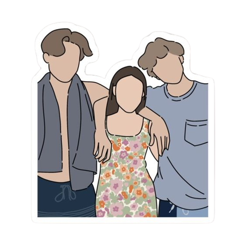

Livros
Com uma história encantadora e personagens inesquecíveis, a Trilogia Verão acompanha os amores, as desilusões e os dilemas da protagonista Belly dos 15 aos 24 anos. Em meio a descobertas e mudanças, ela se apaixona, se envolve em um triângulo amoroso, entra na universidade e descobre que amadurecer também significa tomar decisões difíceis.
O verão que mudou a minha vida
"Pra mim, tudo de bom, tudo de mágico, acontece entre os meses de junho e agosto."
Sempre que chegam as férias de verão, Isabel Conklin deixa para trás sua vida monótona na cidade e vai com a família para Cousins Beach. A casa de praia é seu segundo lar, e é lá que Belly reencontra as pessoas que mais ama: a melhor amiga de sua mãe, Susannah, e os filhos dela, Conrad e Jeremiah.
Ano após ano, ela tenta se aproximar de Conrad, mas nunca dá certo. Parece que o garoto nunca vai corresponder aos sentimentos de Belly. Dessa vez, no entanto, ela percebe algo diferente: Jeremiah passou a enxergá-la com outros olhos, e os dois estão cada vez mais próximos. Belly mudou. E esse verão tem tudo para ser o melhor de sua vida.
Sem você não é verão
“Eu libero você. Eu te expulso do meu coração. Porque se eu não fizer isso agora, nunca mais farei.”
Belly sempre passou as férias em Cousins Beach, mas, após tudo que aconteceu na última vez em que esteve lá, tudo mudou. Esse será o verão mais difícil de sua vida, o primeiro em que ela ficará em casa, sem a companhia de Susannah e sem as aventuras com os irmãos Fisher.
Taylor, sua melhor amiga, está cheia de planos: as duas irão se divertir em muitas festas e se bronzear à beira da piscina. Mas quando Jeremiah liga para Belly e conta que Conrad desapareceu sem deixar pistas, todos os caminhos levam Belly de volta à casa de praia.
Sempre teremos o verão
"Não houve um momento específico. Foi mais como um despertar gradual... É um processo lento, mas quando você acorda, não tem como voltar atrás. Não havia como não saber que era amor."
Os garotos da família Fisher sempre estiveram ao lado de Belly em suas aventuras. Conrad é ousado, sombrio, inteligente. Já Jeremiah é confiável, engraçado, espontâneo. Mesmo sendo tão diferentes, os três constroem uma amizade que parece inabalável. Apenas parece...
No último e emocionante livro da trilogia, Belly vai precisar tomar a decisão mais importante de sua vida e encarar algo que, no fundo, sempre soube que aconteceria: ela vai partir o coração de um deles.
Sobre a autora
Jenny Han (Richmond, Virginia, 3 de setembro de 1980) é uma escritora norte-americana, de origem e filha de coreanos. É uma autora conhecida de livros infantis e adolescentes.
Jenny Han escreveu o seu primeiro livro publicado, Shug, enquanto ela estava na faculdade. Shug é sobre Annemarie Wilcox, uma menina de doze anos de idade, tentando navegar os perigos do ensino médio. Publishers Weekly disse que o livro "Com seu distinto sabor Sulista, a apresentação de conflitos universais e um elenco de personagens facilmente reconhecíveis pelos escritores, este livro provavelmente vai atrair um grande público."
Seu próximo projeto foi uma trilogia para jovens adultos sobre o amadurecimento de uma garota durante o verão. A trilogia, que inclui The Summer I Turned Pretty, It's Not Summer Without You e We'll Always Have Summer, rapidamente se tornou um best-seller do New York Times.
Em 2011, Han começou a trabalhar em uma nova série jovem adult com sua amiga escritora Siobhan Vivian sobre três garotas do ensino médio que começam uma missão de se vingar de pessoas que as magoaram. De acordo com Han, Han e Vivian "eram BFFs e amigas de escrita por anos. Nós sempre trocamos nossas próprias páginas uma com a outra, então é uma progressão natural para nós."
Ela lançou um livro novo em 2014 chamado To All The Boys I've Loved Before, sobre Lara Jean Song Covey, uma garota de ensino médio metade-coreana, cuja vida vira de cabeça para baixo quando as cartas que ela escreveu para todos os garotos que ela tinha gostado são enviadas para eles. Kirkus Reviews disse do livro: "um exploração definitiva do crescimento adolescente e amor juvenil." Han embarcou em uma turnê nacional para To All The Boys I've Loved Before. A continuação, P.S. I Still Love You, foi lançada em 26 de Maio de 2015 e foi encontrada com outra turnê nacional. Além disso, o livro ganhou o Jovem Adulto 2015-2016 da Ásia/Pacífico, América do Prêmio de Literatura.
Em 2016, Han anunciou um terceiro livro sobre Lara Jean chamado Always And Forever, Lara Jean, que saiu na primavera de 2017.